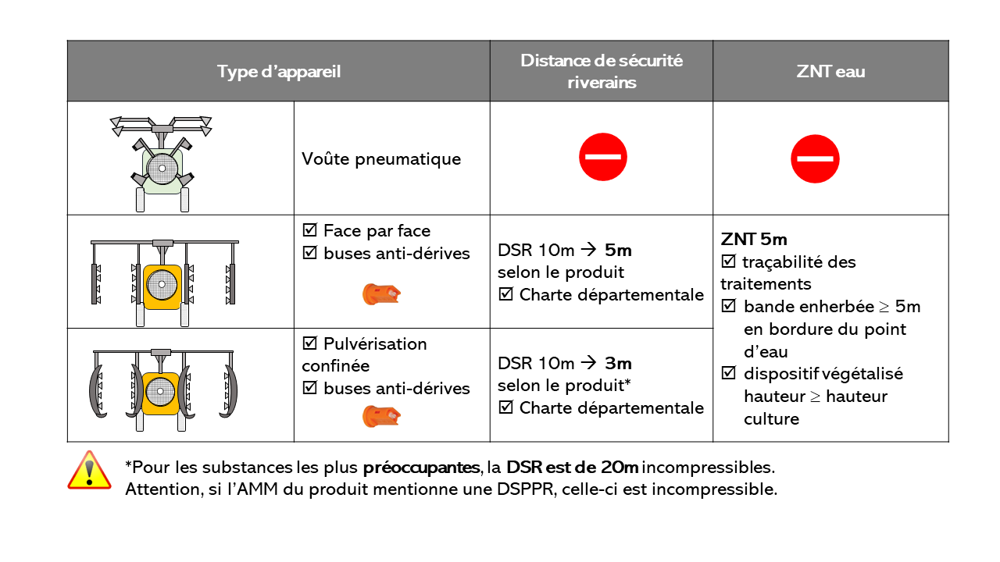
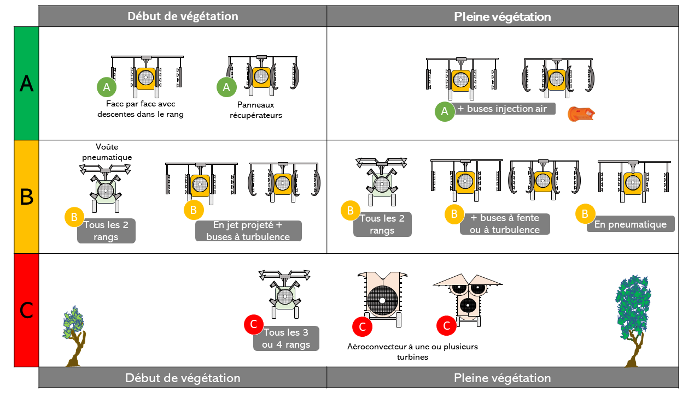

Bien choisir son pulvérisateur
| Intérêts environnementaux | Intérêts agronomiques | Contraintes de mise en oeuvre | Acceptabilité |
|---|---|---|---|
| Très forte réduction de dérive avec les meilleurs appareils | Améliorer la qualité de pulvérisation | Moindre maniabilité avec les appareils les plus précis. Investissement | Variable |
Le choix d’un appareil de traitement impacte le fonctionnement d’une exploitation pour plusieurs années. Les critères de choix sont nombreux, complexes et interdépendants. Dans un contexte d’évolution réglementaire et sociétale rapide, il est nécessaire de prendre en compte les aspects environnementaux dans ce choix
Quelle efficacité sur la réduction de dérive ?
La dérive est très dépendante du matériel de pulvérisation. Le choix d’un appareil est donc primordial. Associé à de bons réglages et équipements, un pulvérisateur performant peut permettre de réduire la dérive d’un facteur 20 par rapport à une voûte pneumatique.
Le décret du 01/01/2020 encadre l’utilisation des produits phytosanitaires avec des distances minimales entre les zones de traitement et les zones d’habitations à respecter, dites DSR (Distance de Sécurité Riverains). Ces distances sont adaptables dans le cadre d’une charte d’engagement départementale qui encadre l’utilisation des produits phytosanitaires. Dans ce cas, un pulvérisateur performant équipé de buses anti-dérive peut permettre de réduire les DSR.

Consultez la liste officielle des matériels d’application de produits phytopharmaceutiques équipés d’une technique réductrice de dérive de pulvérisation. Attention, vérifiez qu’il s’agit bien de la dernière version !
Quel impact sur la qualité de pulvérisation ?
La qualité de pulvérisation est très dépendante du pulvérisateur utilisé et de ses réglages. De nombreux essais ont été réalisés sur la vigne artificielle par l’UMT EcoTech (IFV- INRAE, Montpellier) pour évaluer la qualité de pulvérisation de différents types d’appareils et de leurs modes d’utilisation. Un classement a été établi, en prenant comme référence en vignes larges une voûte pneumatique passée tous les deux rang : les modes de pulvérisation permettant de faire tout aussi bien en réduisant les doses de produit à l’hectare d’au moins 30% sont classés A, et ceux qui font moins bien sont classés C.

Ces travaux ont abouti au dispositif Performance Pulvé1 qui décline cette approche pour chaque appareil. Les informations sont disponibles gratuitement sur le site Performance Pulvé.
Quels critères de choix ?
Des outils en ligne
En complément de Performance Pulvé, un guide pratique a été rédigé conjointement par l’IFV et les chambres d’agriculture du Gard et de l’Hérault, pour aider les viticulteurs lors du renouvellement de leur pulvérisateur. Pour les différentes catégories d’appareils, ce guide aborde les principales précautions à prendre et les questions à poser au constructeur avant l’achat.
Des aides pour les matériels les plus performants
A ce jour, 3 régions (Occitanie, Grand Est et Pays de la Loire) subventionnent via les aides PCAE (FEADER) l’achat de matériels performants sur la base des classes de Performance Pulvé. En Occitanie, une aide à l’achat de 25% avec bonifications cumulables dans la limite d’un taux de 50% (Jeunes Agriculteurs, mode de production AB) pour les pulvérisateurs de classe Performance Pulvé 1 à 4.
Actions complémentaires
Avec un pulvérisateur performant, bien réglé et bien utilisé, vous pourrez réduire les doses en sécurité en complétant avec un outil d’aide à la décision pour la gestion des traitements phytosanitaires : Utiliser un outil d’aide à la décision pour la protection sanitaire
En jet porté, pour réduire la dérive, utiliser des buses antidérive : Utiliser des buses antidérive sur les pulvérisateurs à jet porté
Pour approfondir le sujet
- Vidéo de présentation du dispositif Performance Pulvé
Notes de bas de page
Performance Pulvé a été développé par l’IFV et INRAE en collaboration avec les Chambres d’Agriculture, le comité Champagne et le syndicat des agro-équipementiers (AXEMA)↩︎